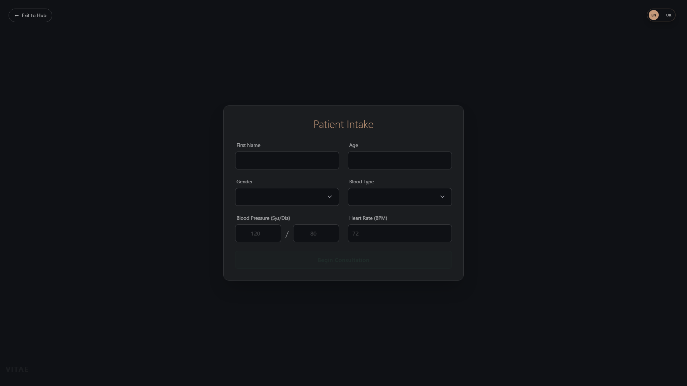
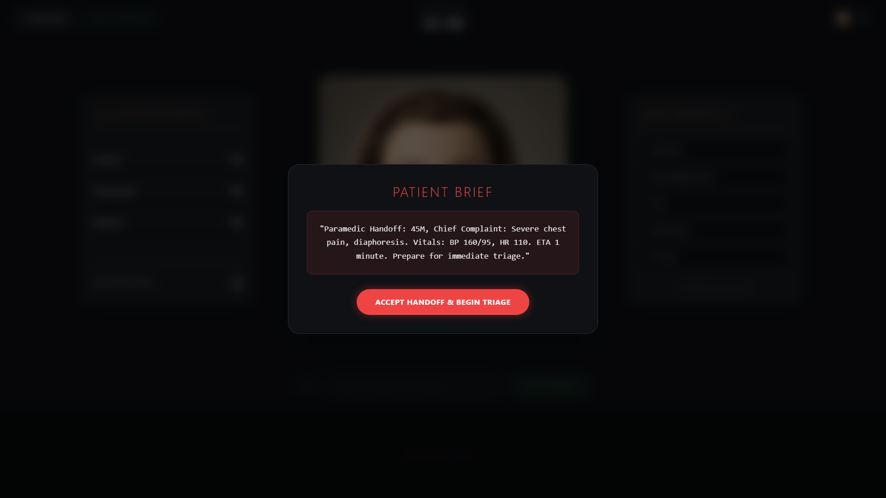
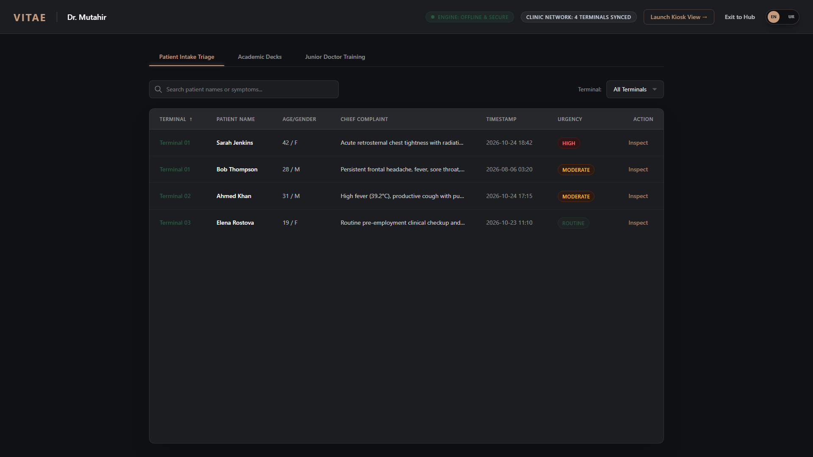
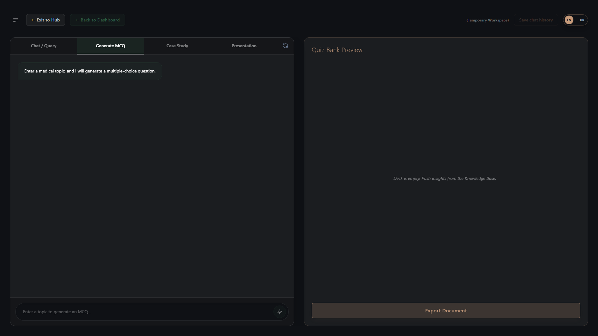
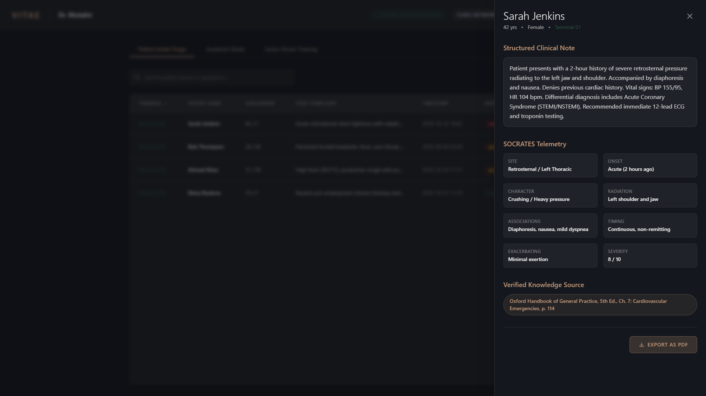
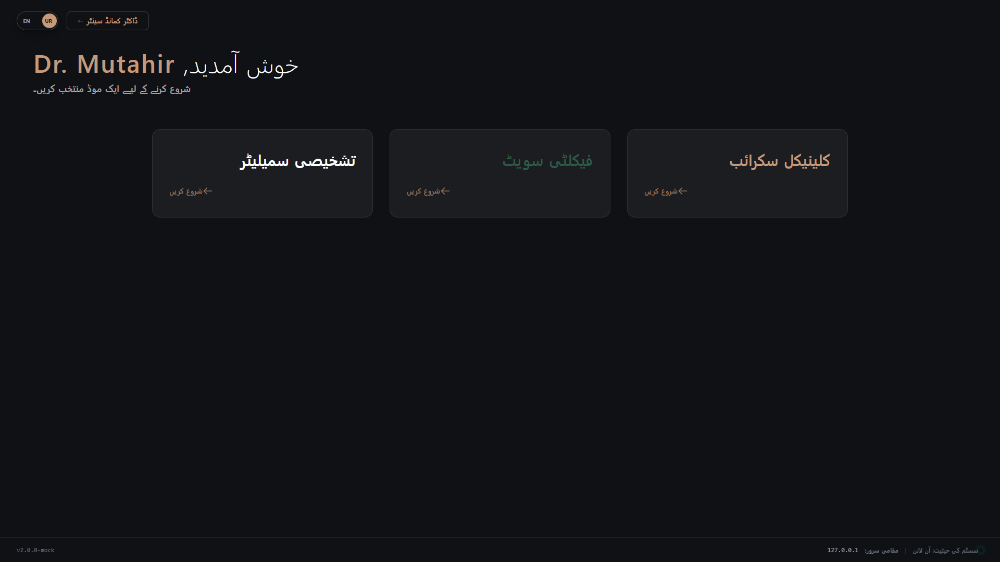
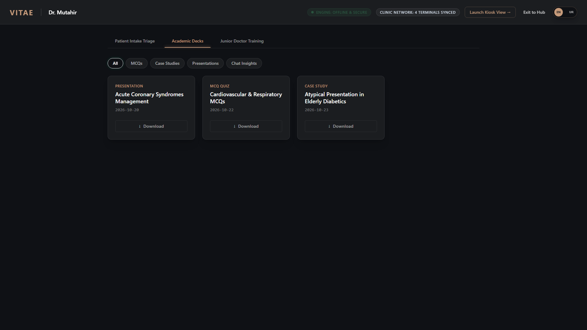

Vitae 2.0 empowers hospitals and medical schools with an on-premise, voice-enabled intelligence layer. From autonomous bilingual patient intake and emergency triage to high-stakes ICU simulation and board exams—completely offline with guaranteed patient privacy.
Engineered to replace fragmented hospital and academic tools with an integrated offline intelligence suite.
Intelligent Waiting Room Triage & Medical Scribe
Eliminate manual paper intake. Vitae interviews incoming patients in natural spoken English or Urdu, conducts an exhaustive SOCRATES pain interrogation, logs live vitals, and flags critical red-flag emergencies before the physician enters the exam room.

High-Stakes Golden Hour Clinical Training
Train residents and medical students on volatile ICU and emergency scenarios. Features a dynamic physiological deterioration engine that reacts to student decisions, accompanied by a 15-minute Golden Hour countdown and post-case SOCRATES grading.

Hospital Triage Dashboard & Records
Give attending physicians a real-time command dashboard of every patient in the ward. Automatically stratifies triage urgency (Resuscitation, Emergent, Urgent, Non-Urgent) and offers 1-click PDF clinical export for existing EHR systems.

Curriculum-Grounded Medical Tutor & Exam Engine
Transform official institutional medical handbooks into interactive teaching tools. Faculty members can instantly generate 4-option clinical MCQ vignette examinations with instant rationale citations, or set trainees loose on a Socratic clinical tutor.

In high-throughput clinics and emergency departments, clinicians cannot afford to spend minutes transcribing patient histories. The Vitae Command Center centralizes incoming intake data across kiosks, tracks active student diagnostic simulations, and maintains a searchable repository of medical records.
View complete transcripts, SOCRATES pain breakdown, and vital telemetry without page reloads.
One-click formatted print summary with clinic headers, physician signature lines, and ICD-10 notes.


Bridging the linguistic divide in healthcare intake. Vitae 2.0 provides true bidirectional Right-to-Left (RTL) interface rendering, Perso-Arabic medical script validation, and natural spoken Urdu conversational models to serve diverse patient demographics without translation friction.
Patients in distress often cannot type on keyboards. Vitae features high-fidelity speech-to-text and handbook-grounded text-to-speech with animated lip-synchronization, creating a calming, empathetic clinical persona.
Click below to observe how Vitae guides a chest pain patient through a strict SOCRATES protocol while detecting emergency cardiac red flags.
Public cloud models hallucinate dosages and fabricate citations. Vitae uses an on-device Retrieval-Augmented Generation (RAG) pipeline backed by local FAISS vector stores, answering strictly from your ingested textbooks, clinical guidelines, and hospital formularies.

Why healthcare systems and academic institutions deploy Vitae instead of generic web chatbots.
| Clinical & Security Feature |
Vitae 2.0
|
ChatGPT / Claude (Cloud) |
|---|---|---|
| 100% Offline Air-Gapped Execution | ||
| Zero Patient Data Ingestion to Third Parties | ||
| SOCRATES Emergency Clinical Intake Protocol | ||
| Dynamic Golden Hour Emergency Simulator | ||
| Hospital Triage Dashboard & Urgency Sorting | ||
| 1-Click Clinical PDF Summary Generation | ||
| Native Bilingual Urdu RTL Speech & Text | ||
| Predictable Enterprise Pricing (No Per-Token Bill) | $20+/mo per seat + API tokens |
Yes, absolutely. Vitae is built from the ground up for air-gapped environments. The vector store, speech engines, and LLM inference run 100% on local hardware. No outgoing internet connection is required or attempted.
Vitae generates instant 1-click clinical discharge summaries formatted for standard print/PDF inclusion. In enterprise deployments, Vitae exposes REST endpoints (`/api/triage/records`) that easily interface with HL7/FHIR middleware.
Yes. The Faculty Suite and Doctor Command Center allow you to ingest standard PDF textbooks, clinical handbooks, and clinical management guidelines into localized FAISS vector databases in minutes.
Vitae is optimized for modern workstations. A standard Windows 10/11 machine with 16 GB RAM and a modern quad-core CPU can run the full suite. Dedicated GPUs (RTX 3060+) can optionally be used for ultra-low sub-second voice generation.
Clinical Notice: Vitae 2.0 is an intelligent clinical decision support and training suite. It is designed to assist licensed physicians and medical educators. It does not supersede independent diagnostic evaluation by certified medical personnel.
Discover how Vitae 2.0 modernizes intake, streamlines triage, and transforms medical education. Experience a customized pilot on your own hardware.
Our clinical technology team will connect within 24 hours to coordinate your trial installation.